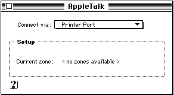
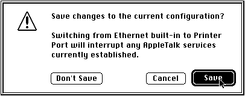
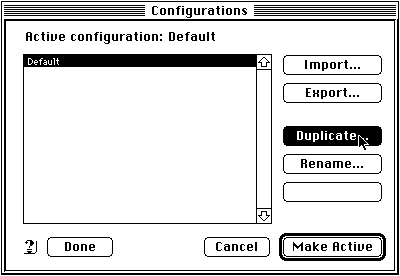
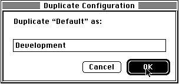
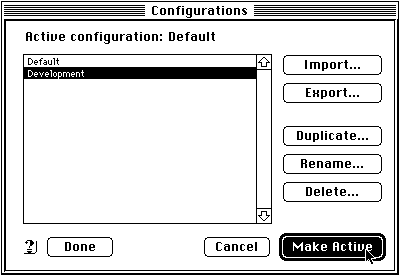
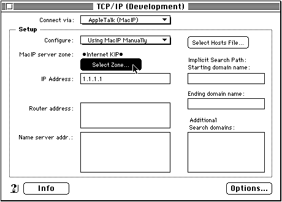
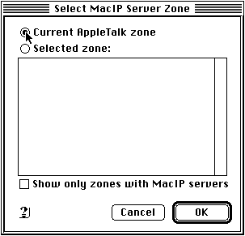
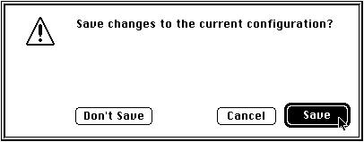

Appendix
B: Running a Macintosh web server on a machine without an Internet connection
Appendix
B: Running a Macintosh web server on a machine without an Internet connection
| How to run your WebSTAR server and a WWW browser simultaneously on the same Macintosh if you are using Open Transport. |
You must have The AppleTalk and TCP/IP control panels installed and AppleTalk turned on. (This can be done from the Chooser or, if it is available, from the Control Strip.)
1. Open the AppleTalk control panel.
2. Select Printer Port from the pop-up menu.
3. Close the AppleTalk control panel.
Click
the Save button in the "Save changes to the current configuration?"
dialog box.
4. Open the TCP/IP control panel.
5. From the File menu choose Configurations...
6. Click the Default configuration in the list to select it. The Default configuration is installed when you install Open Transport.
Click the Duplicate button.
7.
Enter the name "Development In the Duplicate Configuration" dialog
box then click OK.
8.
Select the Development configuration in the list of configurations and
then click on the Make Active button.
9. Select AppleTalk (MacIP) from the Connect via: pop-up menu.

10. Select Using Mac IP Manually from the Configure: pop-up menu.
11. Enter the IP address 1.1.1.1 in the IP Address: field.
12. Click the Select Zone button. Click the Current Apple Talk zone radio button in the "Select Mac IP Server Zone window."
Click OK.
13. Delete any entries in the other fields in the TCP/IP (Development) control panel window.
Close the TCP/IP (Development) control panel.
14. Click the Save button in the Save changes to the current configuration? dialog box.

With Open Transport it is not necessary to restart your computer.